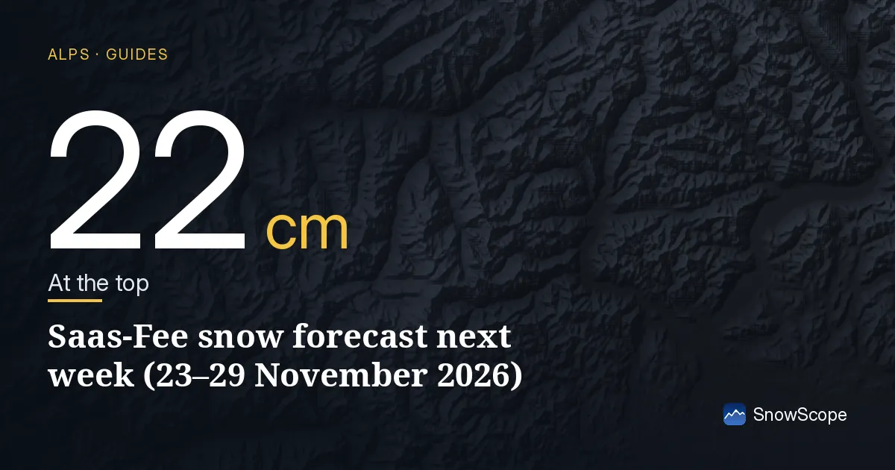
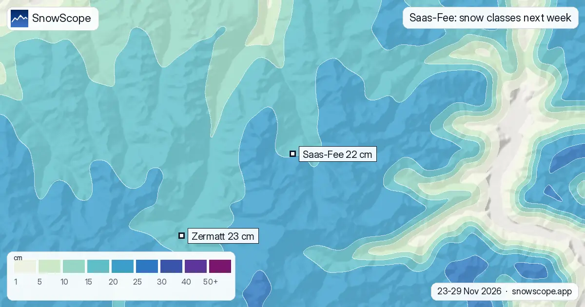
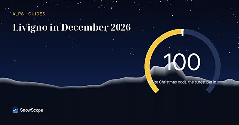

Saas-Fee snow forecast next week (23–29 November 2026): 22 cm at the top
Next week Saas-Fee faces a split forecast: the upper mountain could collect 22 cm of snow (anywhere from 6 to 37 cm), while mid-mountain sees 21 cm and the base 18 cm. Thursday 26 November shapes up as the decisive day, when most of that snow will fall.
See the live snow forecast for Saas-Fee in the SnowScope appSnow depth, powder alerts and the 3D map, free.
What to expect at each height
The pattern is clear: higher means more. At 3600 m near the top, the forecast shows 22 cm; drop to 2700 m and you get 21 cm; at the base around 1800 m you have 18 cm. The range of uncertainty grows with height: 6–37 cm at the top, but only 5–30 cm at the base.
This spread matters. One forecast scenario brings a solid week of accumulation; another gives you barely half as much. The glacier slopes above Felskinn and the upper sections of the Allalin will be your safest bets for consistent depth.

When the snow arrives: day by day
Most of next week is dry or nearly so. Wednesday 25 November adds 4 cm (up to 5) at the top; Thursday 26 November is when things change, with 11 cm in the central forecast (ranging up to 20 cm). Sunday 29 November chips in another 3 cm (up to 5). Between these days, expect traces only.
Thursday morning after a fresh snowfall is typically your best window to ski. Lifts and avalanche patrols usually work through the night, so conditions tend to be softer and safer once you get on the hill.
How certain is this forecast?
Not very. The range from low to high case (6 to 37 cm) tells you there is real uncertainty in the weather pattern. By midweek—around 25 November—a clearer picture should emerge.
Check the forecast again on Tuesday or Wednesday before you book your trip. SnowScope updates daily, and the numbers will narrow as the system gets closer.
Will it snow all the way down to the village?
Yes, mostly. You lose only 4 cm between the top and the base level—from 22 cm down to 18 cm. That small loss means the precipitation is falling as snow even at 1800 m, so the car-free village at the foot of the glacier should see white weather, not rain.
This is a real advantage: the whole mountain gains coverage, not just the peaks.
How does Saas-Fee stack up against nearby resorts?
Next week, Saas-Fee's 22 cm at the top stands just behind its neighbours. Zermatt (18 km away) is forecast for 23 cm, Cervinia (28 km away) for 23 cm, and Verbier (50 km away) for 24 cm—all within a few centimetres of each other.
The differences are too small to base your choice on. Which slopes face north or south, which lifts are open, and how the resort manages the snow will make far more difference than these small gaps between resorts.
This week's layer underneath
Before next week's main event, Saas-Fee gets its first snow from now through Thursday 20 November. The upper slopes will pick up 36 cm in that period, the base 17 cm. That early accumulation sets a foundation: when Thursday 26 November arrives, you are not starting from bare rock.
Saas-Fee is ringed by summits above four thousand metres and its glacier is one of the earliest openers in Switzerland. That height advantage means the whole mountain should build a usable snowpack.
Tips for skiers
- Plan your trip around Thursday 26 November for the best conditions; the morning after will likely be your most rewarding ski day.
- Go high: the glacier slopes above Felskinn and the Allalin hold snow longer and deeper than the lower sections of the resort.
- Treat the base around 1800 m as reliable for snow too—you will not lose much depth on the way down.
- Before leaving the pistes, check the Swiss avalanche bulletin if you are venturing off-piste.
- Watch the forecast midweek: if the high case (37 cm) comes into view, that changes your packing and your terrain choices.
About these numbers
Resort snow depths are the deepest snow on the resort's upper slopes on the date shown; they are estimates for an area, not a measurement at one point. Forecasts can change. Always read the official avalanche bulletin before going off-piste.
Cite this report
For research, teaching or the press: the numbers and charts are free to reuse under CC BY 4.0 with this citation.
SnowScope (2026), Saas-Fee snow forecast next week (23–29 November 2026): 22 cm at the top, https://snowscope.app/blog/en/2026/11/saas-fee-snow-forecast-next-week-23-29-november-2026.html, accessed 2026-11-16
SnowScope (Atlas Labs). (2026, November 16). Saas-Fee snow forecast next week (23–29 November 2026): 22 cm at the top. SnowScope snow reports. https://snowscope.app/blog/en/2026/11/saas-fee-snow-forecast-next-week-23-29-november-2026.html
BibTeX
@misc{snowscope2026saasfeesnowforecastnextw,
author = {{SnowScope (Atlas Labs)}},
title = {Saas-Fee snow forecast next week (23–29 November 2026): 22 cm at the top},
year = {2026},
month = nov,
howpublished = {\url{https://snowscope.app/blog/en/2026/11/saas-fee-snow-forecast-next-week-23-29-november-2026.html}},
note = {Published 2026-11-16 11:36 UTC; accessed 2026-11-16}
}· CC BY 4.0 · Methods, data and tools →
Saas-Fee: snow and temperature by height, this winter vs last (tools) →
Follow Saas-Fee
Free: a message when fresh snow is coming, and the forecast every morning.
More snow reports

Twelve famous Alpine resorts ranked by their usual December snow depth at mid-mountain and the top, from 46 past winters, with the poor-December floor for each and the weeks that never fail.

Livigno's snow today, what the European seasonal forecast says about December, and why height beats a warm month at Christmas.

A cheap 3-day Lake Como plan for December with real 2026-27 prices: trains, ferries, a funicular and a ski day at Piani di Bobbio or Madesimo, what you save compared with Cortina, and the chance of snow at Christmas.